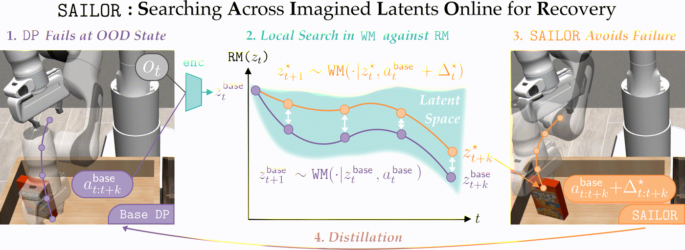
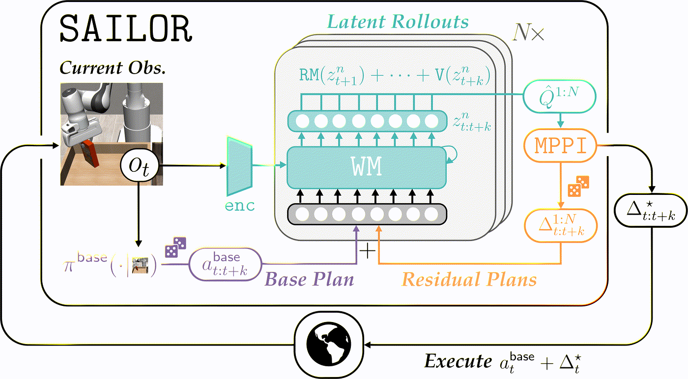
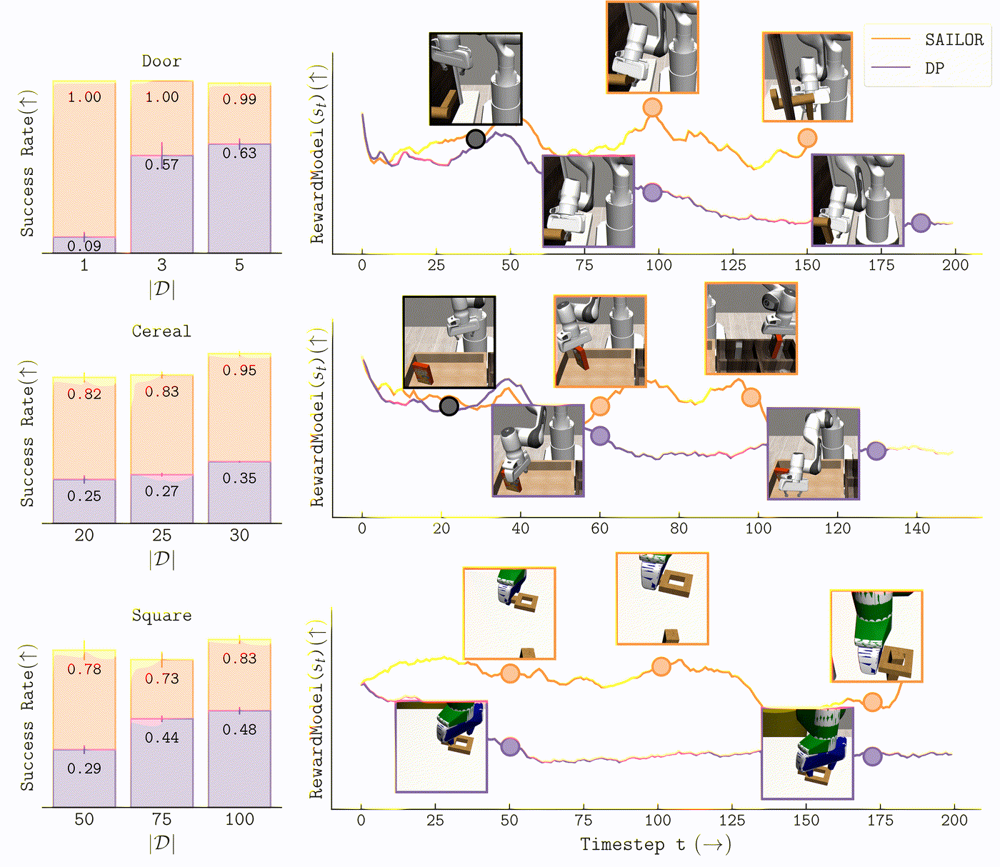

The problem
Behavior cloning supervises a policy only at the states the expert visited. The first small error moves the robot off that support, where there is no supervision at all, and the errors compound from there. Adding demonstrations shrinks the off-support region but never removes it. The standard fixes (DAgger-style human corrections, ground-truth reward labels, a privileged simulator) all require exactly the supervision you do not have.
What I built
- Learn a latent world model and a reward model from a mixture of expert demonstrations and the base policy's own rollouts. The reward model is trained to tell expert states from base-policy states in latent space, so no ground-truth reward labels are needed.
- Pre-train a diffusion policy on the expert data as the base policy, then alternate rounds of on-policy collection, world and reward model updates, and optional distillation back into the policy.
- At test time, run MPPI inside the learned latent space to search for a correction to the base policy's nominal plan, scoring candidates with the learned reward plus a terminal value from the critic. Execute the first action, replan on the next observation, MPC style.
- Evaluate on 12 visual manipulation tasks across three suites (RoboMimic, RoboSuite, ManiSkill) at three dataset scales, against diffusion-policy baselines trained on identical data. RoboSuite and ManiSkill demonstrations were collected by hand with a 3D SpaceMouse, up to 200 per task.
- Scale the search at test time to 8× the sample budget seen during training, to check whether harder optimization against a learned reward starts hacking it.
2–3×
higher success than diffusion policies trained by behavior cloning on the same data, consistently across all 12 tasks. Scaling the baseline up to 5–10× more demonstrations still leaves a gap. Spotlight at NeurIPS 2025.
What worked
- The search only has to be local. The base diffusion policy already proposes a reasonable multi-step plan, so MPPI only searches for a correction to it rather than for a plan from scratch. That keeps the optimization tractable and means an imperfect world model is still useful.
- The failure data is the reward signal. Expert demonstrations versus the base policy's own rollouts is precisely the contrast that defines going wrong, so a discriminator over that pair yields a dense latent reward with no labels, no human in the loop, and no simulator reward function.
- No reward hacking at 8× the training sample budget. The usual objection to test-time scaling is that more optimization finds the learned reward's blind spots. Performance improved up to the training-time budget and then held flat rather than collapsing, plausibly because the models are refit on the same on-policy data the planner drives the agent into.
What didn't
- SAILOR is not an offline method. It needs on-policy rollouts from the base policy to fit the world and reward models, so unlike plain behavior cloning it needs an environment to interact with.
- Search is not free. Running MPPI in latent space at every control step is much more expensive per action than a forward pass of the base policy. Distillation recovers some of that, but it is a separate step and it gives back some of the recovery behavior.
- All 12 tasks are simulated visual manipulation. No real-robot results in this work.



[ → ]